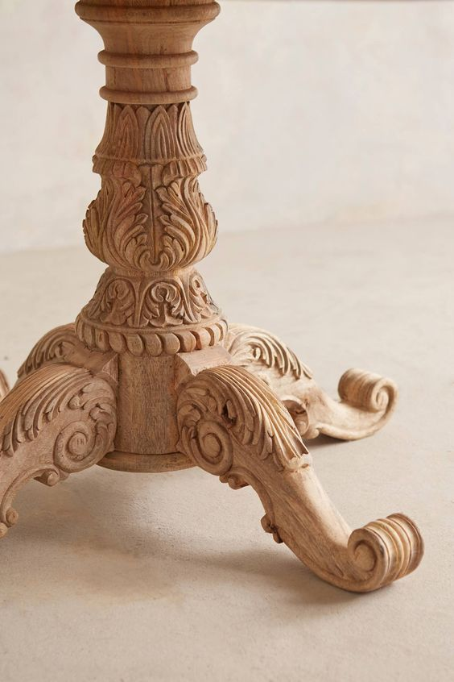
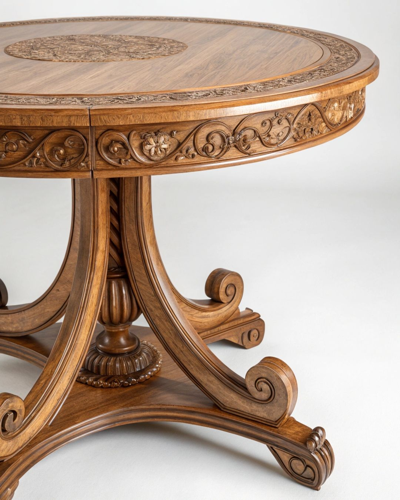
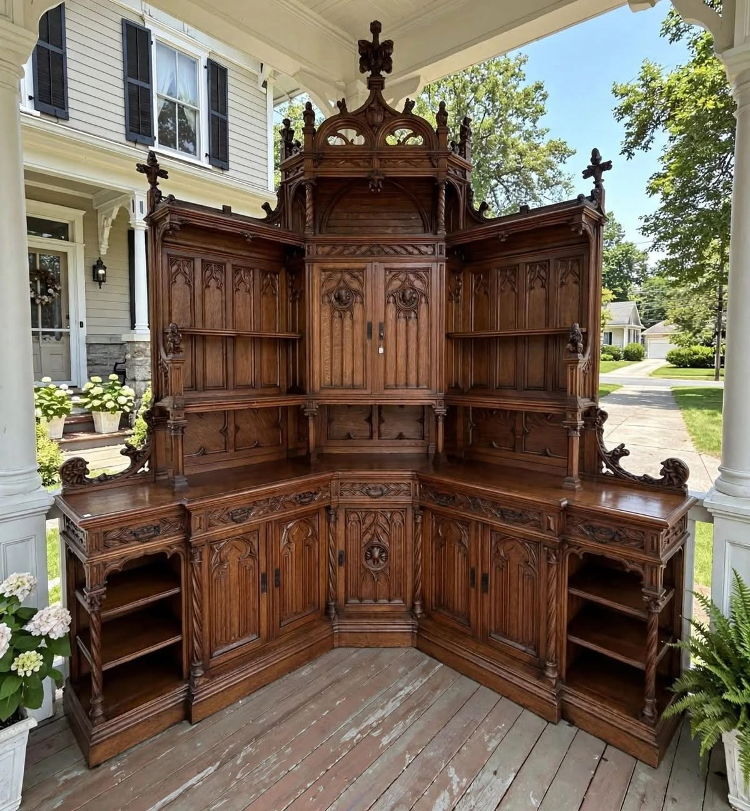

Portfolio
Listos para amueblar palacios, adornar tu hogar o proveer a oficinas o grandes espacios con nuestros
muebles.
Nos especializamos en estilos clásicos y obras de marquetería o tallado profesional. Acá podes encontrar
varios de nuestros trabajos hasta la fecha. Si te interesa un tipo de mueble en particular podes
contactarnos para pedirnoslos catálogos y para que puedas tomarlo como referencia para diseñar un mueble
a tu medida.
Juegos de living

Mesa de living de inspiración victoriana, realizada en madera maciza de nogal americano, con acabado
satinado en tono nogal oscuro. La tapa circular presenta un trabajo de marquetería en piezas de nogal y
raíz de nogal, formando un dibujo concéntrico que destaca la veta natural de la madera.
El borde está trabajado con talla artesanal, mientras que la cintura incorpora paneles ornamentales con
motivos vegetales, rosetas y detalles florales tallados a mano. El pie central torneado combina molduras
y volúmenes curvos, rematado por una base de tres patas cabriolé con terminaciones en voluta.

Juego de living de inspiración Luis XV, realizado en madera maciza de caoba con acabado satinado en tono
caoba oscuro. La mesa central presenta un trabajo de marquetería en la tapa, con incrustaciones de raíz
de nogal y detalles florales tallados a mano.
Las patas cabriolé están decoradas con molduras y volutas, mientras que los sillones y sillas del juego
presentan respaldos curvos y brazos torneados, con tapizado en terciopelo color burdeos. Los detalles
ornamentales incluyen rosetas, motivos vegetales y remates en voluta tallados a mano.

Biblioteca modular de roble macizo, con acabado en nogal oscuro, puertas y paneles decorados con talla
artesanal de inspiración gótica. Cuenta con múltiples estantes, armarios de guardado y una ornamentada
coronación central tallada a mano. Una pieza monumental diseñada para ocupar y vestir una pared
completa.